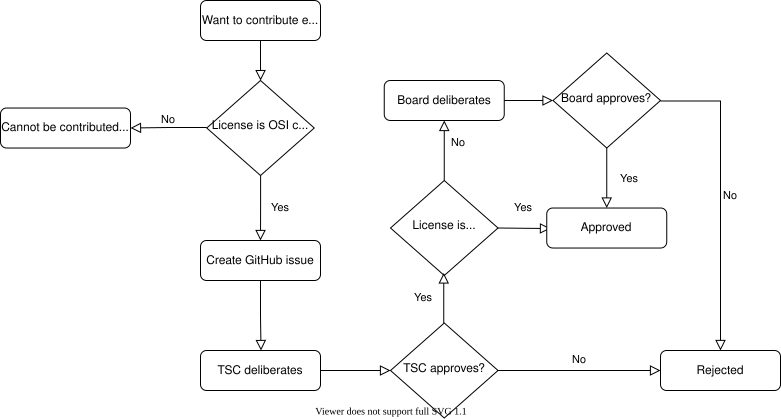

贡献外部组件
在某些情况下，最好利用现有的外部源代码，以避免重新实现其他开源项目中现成可用的基础功能或特性。
本节介绍在哪些情况下可以将外部源代码导入 Zephyr，以及管理这种纳入的流程。
在纳入流程中，会考虑三个主要因素来决定是否接受该外部代码。以下各节将分别介绍这些因素。
注意，本页大部分内容讨论的是最终会被编译并链接到最终镜像、并烧录到目标硬件中的外部组件。对于仅在编译、代码分析、测试或仿真过程中使用的外部工具，请参阅本页末尾的 贡献外部工具 一节。
软件许可证
备注
以 Apache-2.0 许可证授权的外部源代码不受本节约束。
从使用 Apache 2.0 以外许可证的其他项目向 Zephyr 项目集成代码，需要结合具体情况充分理解，并按照 Zephyr project charter 的规定，经 Zephyr governing board 批准。理事会会自动拒绝未经 Open Source Initiative (OSI) 批准的许可证。更多详情请参阅 提交和评审流程 一节。
通过仔细审查潜在的贡献，并对所贡献的代码强制执行 开发者原创证明（DCO），我们确保 Zephyr 社区可以使用 Zephyr 项目开发产品，而无需担心专利或版权问题。
价值
与其他任何常规贡献一样，包含外部代码的贡献也需要评估其价值。不过，对于来自现有项目的代码这种特殊情况，还必须回答其他一些问题才能接受该贡献。具体来说，在外部源代码被项目接受之前，技术指导委员会（Technical Steering Committee）会考虑并仔细评估以下问题：
这是向项目引入该功能的最佳方式吗？需要同时评估在内部实现该功能的成本，以及维护一个外部开发的代码库所产生的成本。
该外部项目是否在积极维护？这对于涉及安全或密码学的源代码尤为重要。
是否考虑过所提议的具体实现的替代方案？是否有其他开源项目实现了相同的功能？
集成方式
将外部源代码集成到 Zephyr 项目中有两种方式，必须针对每种具体情况仔细考虑，选择合适的方式。
集成到主代码树中
将外部源代码集成到项目中的第一种方式，是直接将源代码文件导入主 zephyr 仓库。这自然意味着导入的源代码成为“主线”代码库的一部分，进而要求：
代码按照 Zephyr 的 编码风格指南 进行格式化
代码遵守项目的 编码规范
代码与主代码树中的其余代码一样，需要满足相同的检查和验证要求，包括静态分析
所有文件都包含 SPDX 标签（如果还没有的话）
如果源代码不是以 Apache 2.0 许可证授权的，需要在仓库根目录的 REUSE.toml 文件中添加一个描述该组件的
[[annotations]]条目。许可证页面 就是根据该文件生成的。
这种集成方式对小型和大型外部代码库都适用，但通常更多地用于前者。
作为模块集成
将外部源代码集成到项目中的第二种方式，是将第三方开源项目的全部或部分导入一个单独的仓库，然后以 模块 的形式将其包含进来。采用这种方式时，代码被视为在外部开发，因此不会自动受上一节中那些要求的约束。
集成到主清单（manifest）文件（west.yaml）中
集成到主 west.yml 清单文件中的外部代码，仅限于 Zephyr 子系统所使用的代码（库）、平台或驱动所使用的代码（HAL），以及测试或构建 Zephyr 组件所需的工具。
这一类模块的集成由 Zephyr 项目 CI 验证，并在每个 Zephyr 版本中确认可以正常工作。
在没有详细迁移计划的情况下，不会从代码树中移除已集成的模块。
作为可选模块集成
独立的、或松散集成且没有任何传入依赖的模块/项目，应设为可选并保持独立。直接或通过 Zephyr 子系统或平台为用户提供价值的可选项目，应添加到一个默认被过滤的可选清单文件（submanifests/optional.yml）中。
这类可选项目可以在自己的仓库中包含示例和测试。
不得在 Zephyr 代码树（Git 仓库）中添加任何直接依赖，所有示例或测试代码都应作为模块的一部分进行维护。
备注
这适用于所有新的可选模块。对于在 Zephyr Git 仓库中带有示例和测试代码的现有可选模块，将逐步将这些代码迁移出去。
作为外部模块集成
与可选模块类似，但会使用预定义的模板，以文档条目的形式添加到 Zephyr 项目中。这类模块存在于 Zephyr 项目清单之外，并配有文档，指导用户和开发者如何集成相应功能。
持续维护
无论采用哪种集成方式，集成到 Zephyr 中的外部源代码都需要定期持续维护。因此，提议集成外部源代码的提交者必须承诺在可预见的未来维护该代码的集成。在此过程中可能需要在 MAINTAINERS.yml 中添加一个条目。
提交和评审流程
外部源代码在纳入项目之前，必须经过技术指导委员会（TSC）的评审和接受，某些情况下还需要经过 Zephyr 理事会的评审和接受。
外部源代码集成请求必须通过在 GitHub 上的 Zephyr 项目问题跟踪系统中创建一个新 issue 来提出，其中需详细说明源代码及其如何集成到项目中。
按照以下步骤开始提交流程：
务必详细阅读 贡献外部组件 一节，以了解 TSC 和理事会批准或拒绝请求时所采用的标准
使用 New External Source Code Issue 打开一个 issue
填写所有必填部分，确保提供足够的细节，以便 TSC 评估该请求的价值。也可以另外创建一个演示该外部源代码集成的 PR（拉取请求），并在 issue 中附上其链接
等待 TSC 的反馈，并回答以 GitHub issue 评论形式提出的任何其他问题
如果经 TSC 审议后得出结论，认为集成外部源代码是最佳方案，并且该外部源代码以 Apache-2.0 许可证授权，那么提交流程即告完成，可以集成该外部源代码。
但是，如果该外部源代码使用 Apache-2.0 以外的许可证，则还必须执行以下额外步骤：
TSC 主席会将早期提交过程中创建的 GitHub issue 链接转交给 Zephyr 理事会做进一步评审
Zephyr 理事会有两周时间进行评审和提问：
如果没有异议，此事即告结束。如果理事会在两周期满前一致批准，批准可以提前完成
如果某位理事会成员提出了无法通过电子邮件解决的异议，理事会将召开会议，讨论是否推翻 TSC 的批准，或找出能够解决异议的其他方法
经 Zephyr TSC 和理事会批准后，提交流程即告完成
下面的流程图概述了整个流程：

贡献外部工具
本节专门讨论将外部工具纳入 Zephyr 项目的情况。这里的工具是指辅助编译、测试或仿真过程、但在任何情况下都不会成为编译并链接到最终镜像中的代码的一部分的软件。此处的“纳入”是指成为 Zephyr 默认发行内容的一部分：要么直接位于主代码树的 scripts/ 文件夹下，要么间接地作为主 west.yml 清单中的一个 west 项目。因此，本节不适用于工具链、仿真器等第三方工具，Zephyr 构建系统或文档仍可以引用这些工具，而无需将其纳入 Zephyr。
工具组件必须以 Open Source Initiative (OSI) 批准的许可证发布。
与常规外部组件一样，从其他项目导入的工具既可以集成到主代码树中，也可以作为 west 项目 集成。注意，在这种情况下，对应的 west 项目不会是一个 模块，因为工具不使用 Zephyr 构建系统，也不需要由其处理。关于两者区别的更多信息，请参阅 模块与 west 项目。
如果工具集成到主代码树中，应放在 scripts/ 文件夹下。如果工具作为 west 项目集成，则只要通过主 west.yml 清单中的 group-filter: 字段将该项目设为可选，项目仓库就可以托管在 zephyrproject-rtos GitHub 组织之外。关于可选项目的更多信息，请参阅 这一节。
每个引入新外部工具组件的 PR 都必须经过 TSC 批准。TSC 代表会对所提议的添加内容逐案进行单独分析。
关于主清单的其他注意事项
一般来说，对 main manifest file 的 projects: 部分进行任何添加或删除都需要 TSC 批准。这包括但不限于：
添加和删除组及组过滤器
添加和删除项目
添加和删除
import语句